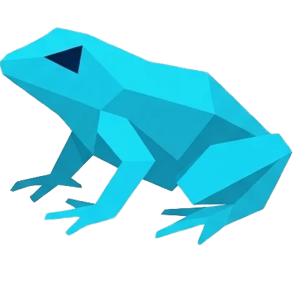
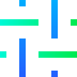

Tereditor
GitHub repository
·
Live site
A workbench for terminal coding agents: it keeps the CLI
workflow while making context, worktrees, processes, and
agent activity visible. I am building the desktop
application and its Android companion as a practical
environment for directing coding agents.

ChromaWay / Rell
Rell language and developer tooling
Rell Playground
A browser-based environment for experimenting with Rell.
It combines an editor, compiler execution, SQL
translation, and REPL workflows so developers can learn
the language and share runnable examples.
Source on GitHub
·
Live playground.
Rell API reference generator
A documentation generator for Rell system libraries,
turning source-level declarations into searchable,
navigable API reference pages with namespaces,
signatures, descriptions, and examples.
Source on GitHub
·
Live reference.